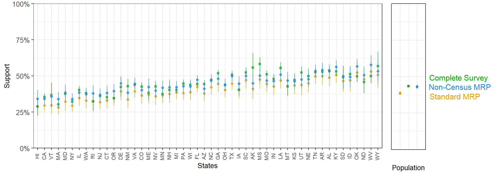
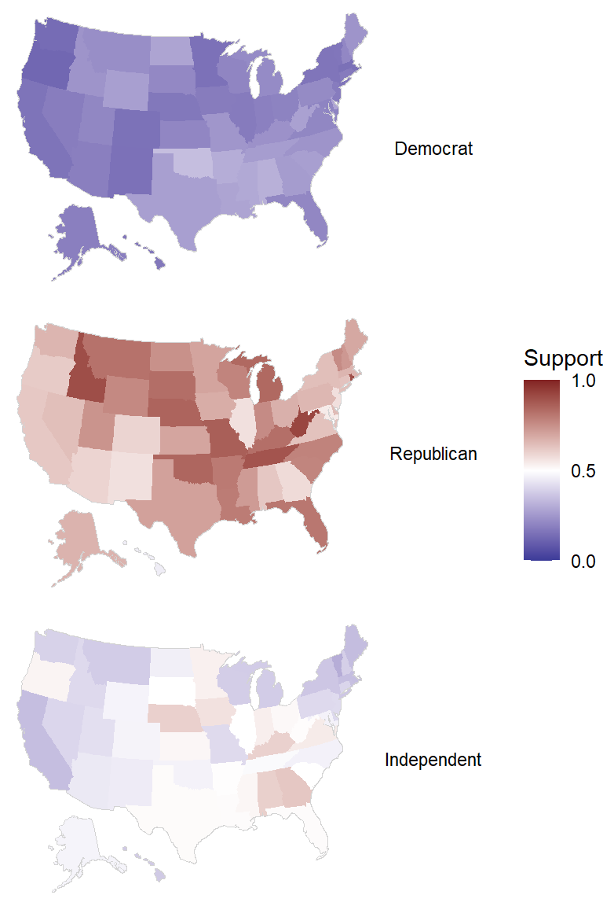

Chapter 3 MRP with Noncensus Variables
When our sample population is different than our target population, MRP can only adjust for the predictors included in the model. As these are restricted by the variables in the poststratification table, which in turn are limited by the questions asked in the census, the characteristics that we can use for poststratification are quite reduced. This is the reason researchers tend to use simple demographic and geographic variables, which unfortunately do not provide much help if the bias in the survey originates from non-response in voters of a certain party, for instance. As a potential solution, Kastellec et al. (2015) propose extending the postratification table using a survey that contains one or multiple non-census variables that could help adjusting for the differences between the sample and the target population. For instance, if our survey asked for partisanship, we could use the CCES to extend the poststratification table such as that it also contains this variable. The extension is done in two steps. First, we fit a multilevel model in which we try to predict partisanship in the CCES based on the variables available in the census. Second, we use this model to predict, for each cell in the original poststratification table, what proportion of subjects are Democrats, Republicans, or Independents. This extended poststratification table that contains partisanship will allow us to (a) generate MRP estimates that adjust for differential party nonresponse in the original survey; and/or (b) obtain estimates outcome of interest by party.
For this case study we will continue using the previous example of studying support for the right of employers to exclude abortion coverage.
## Read CCES data with the same outcome variable and predictors, but also including
## party
df_all <- read.csv("cces18_common_vv.csv")
list_states_abb <- datasets::state.abb
list_states_num <- c(1,2,4,5,6,8,9,10,12,13,15,16,17,18,19,20,21,22,23,24,25,26,
27,28,29,30,31,32,33,34,35,36,37,38,39,40,41,42,44,45,46,47,
48,49,50,51,53,54,55,56)
# Preprocessing. The clean_cces2 function also reads party
df_all <- clean_cces2(df_all, list_states_abb, list_states_num)
## Read poststratification table
poststrat_df <- read.csv("postrat_data.csv")
poststrat_df$state <- factor(poststrat_df$state,
levels = list_states_num,
labels = list_states_abb)
## Read state-level predictors and add them to the CCES and poststratification table
statelevel_predictors <- read.csv('statelevel_predictors.csv')
statelevel_predictors$state <- factor(statelevel_predictors$state,
levels = list_states_abb,
labels = list_states_abb)
df_all <- left_join(df_all, statelevel_predictors,
by = "state", keep = TRUE)
poststrat_df <- left_join(poststrat_df, statelevel_predictors,
by = "state", keep = TRUE)3.1 Model-based Extension of the Poststratification Table
As we have described, we start fitting a multilevel model to predict partisanship as a function of the same demographic and geographic variables used in the standard MRP model, which will allow us to predict the proportion of Republicans, Democrats, and Independents in each row of the poststratification table. As there are three levels for partisanship, we use a Bayesian multinomial (i.e. unordered) logistic regression which can be fitted in brms (currently, rstanarm does not support multinomial logistic regression).
For this extension step we should use a survey that we think is to some degree representative with respect to the variable that we are trying to include in the poststratification table. In our example, if we extended our census-based poststratification table using a highly non-representative survey with respect to party, we would indeed generated a biased poststratification table and ultimately obtain compromised MRP estimates. In other words, this is our opportunity to bring outside information in order to generate a richer poststratification table that can adjust for potential biases in the main survey, so we need to make sure that the survey we use to extend the poststratification table is trustworthy with respect to the non-census variable.
In this example, we will use a 5,000-person sample of the CCES to extend the poststratification table to include partisanship, which is addressed in the CCES:
Generally speaking, do you think of yourself as a …? (Democrat, Republican, Independent, Other, Not Sure)
For simplicity, we included the few respondents that indicated “Other” or “Not Sure” as Independents.
# Setting seed to arbitrary number for reproducibility
set.seed(1010)
# Taking random sample from the CCES survey
df_random <- df_all %>% sample_n(5000)
# fit_party <- brm(party ~ (1 | state) + (1 | eth) + (1 | age) + (1 | educ) + male +
# (1 | male:eth) + (1 | educ:age) + (1 | educ:eth) +
# repvote + factor(region),
# family = "categorical",
# data = df_random,
# prior = c(prior(normal(0, 5), class = Intercept),
# prior(normal(0, 1), class = b),
# prior(exponential(0.5), class = sd, dpar = muIndependent),
# prior(exponential(0.5), class = sd, dpar = muRepublican)),
# control = list(adapt_delta = 0.9, max_treedepth = 10),
# seed = 1010)
#
# saveRDS(fit_party, file = "fit_party_example.rds")
fit_party <- readRDS("fit_party_example.rds")This model gives us, for each poststratification cell \(j\), an estimate for the proportion of Democrats (\(\hat{\theta}_{{\rm Democrat}, j}\)), Republicans (\(\hat{\theta}_{{\rm Republican}, j}\)), and Independents (\(\hat{\theta}_{{\rm Independent}, j}\)). We can multiply these quantities by the number of people in cell \(j\) to estimate the number of Democrats (\(N_j \: \hat{\theta}_{{\rm Democrat}, j}\)), Republicans (\(N_j \: \hat{\theta}_{{\rm Republican}, j}\)), and Independents (\(N_j \: \hat{\theta}_{{\rm Independent}, j}\)), obtaining an extended poststratification table in which each cell has been expanded into three. That is, if the original poststratification table had \(J\) rows (e.g. 12,000 in our case), the new one will have \(3 J\) (e.g. 36,000). There is, however, a certain complication that must be taken into account. The model-based estimates for the proportion of Democrats, Republicans, and Independents are not single numbers, but several draws from the posterior distribution that capture the uncertainty about these estimates. For instance, if we have 500 draws for \(\hat{\theta}_{{\rm Democrat}, j}\), \(\hat{\theta}_{{\rm Republican}, j}\), and \(\hat{\theta}_{{\rm Independent}, j}\), we can imagine 500 poststratification tables with different numbers for each cell.
## Use pp_expect to predict partisanship for original poststratification table
posmat_party <- pp_expect(fit_party, newdata = poststrat_df, transform = TRUE)
# pp_expect does not allow us to select the number of draws. Therefore, we
# take a random sample of 500 draws from posterior distribution
posmat_party <- posmat_party[sample(nrow(posmat_party), size=500, replace=TRUE),,]
# Extend poststratification table
poststrat_df_threefold <- poststrat_df[rep(seq_len(nrow(poststrat_df)), each = 3), ]
poststrat_df_threefold$party <- rep(c("Democrat", "Republican", "Independent"), nrow(poststrat_df))
# Calculate new numbers for the cells of the new poststratification table. K
# is a matrix containing 36000 rows (one for each cell of the poststratification table)
# and 500 columns (corresponding to the 500 draws).
K_theta <- apply(posmat_party, 1, function(x){as.vector(t(x))})
K <- K_theta * rep(poststrat_df$n, each = 3)In sum, we started with a poststratification table with 12,000 rows. Here we can see the first three rows:
| state | eth | male | age | educ | n |
|---|---|---|---|---|---|
| AL | White | -0.5 | 18-29 | No HS | 23948 |
| AL | White | -0.5 | 18-29 | HS | 59378 |
| AL | White | -0.5 | 18-29 | Some college | 104855 |
We have used a model-based approach to include partisanship in this poststratification table, that now has 36,000 rows (again, each row in the original table has been split into three). However, in order to consider the uncertainty in these model-based estimates we have actually built 500 different poststratification tables. Here we show the first 9 rows of one of these 500 poststratification tables:
| state | eth | male | age | educ | party | n |
|---|---|---|---|---|---|---|
| AL | White | -0.5 | 18-29 | No HS | Democrat | 2937.5 |
| AL | White | -0.5 | 18-29 | No HS | Republican | 11304.4 |
| AL | White | -0.5 | 18-29 | No HS | Independent | 9706.1 |
| AL | White | -0.5 | 18-29 | HS | Democrat | 11157.6 |
| AL | White | -0.5 | 18-29 | HS | Republican | 27019.1 |
| AL | White | -0.5 | 18-29 | HS | Independent | 21201.3 |
| AL | White | -0.5 | 18-29 | Some college | Democrat | 22402.2 |
| AL | White | -0.5 | 18-29 | Some college | Republican | 44411.2 |
| AL | White | -0.5 | 18-29 | Some college | Independent | 38041.6 |
3.2 Adjusting for Nonresponse Bias
We have described how to extend the poststratification table by including partisanship. Now, we will use this poststratification table to adjust for differential party nonresponse.
3.2.1 Setting up example with an artificially nonrepresentative sample
To demostraty how non-census MRP can adjust for party, we will use a survey that is biased with respect to party. As we are already familiar with the CCES dataset, what we are going to do is to take a different sample of 5,000 respondents that simulates a high nonresponse rate among Republicans and, to a lesser degree, Independents.
# Random sample of 5,000 that weights by party
df_nonrepresentative <- df_all %>% sample_n(5000, weight = I((df_all$party=="Democrat")*1 +
(df_all$party=="Independent")*0.75 +
(df_all$party=="Republican")*0.5))Previously, we saw that the national average support for requiring companies to cover abortion in their insurance plans was around 43.4% according to the CCES. Comparatively, this biased sample of the CCES gives an estimate of 36.7%. This is not surprising, as missing Republicans and Independents in the survey should reduce support for the employers’ right to decline abortion coverage.
3.2.2 Standard MRP
We fit a standard MRP (i.e. without including party) on the nonrepresentative sample, using the same model as in the MRP introduction and the non-extended poststratification table.
# fit_abortion_standard <- stan_glmer(abortion ~ (1 | state) + (1 | eth) + (1 | age) + (1 | educ) + male +
# (1 | male:eth) + (1 | educ:age) + (1 | educ:eth) +
# repvote + factor(region),
# family = binomial(link = "logit"),
# data = df_nonrepresentative,
# prior = normal(0, 1, autoscale = TRUE),
# prior_covariance = decov(scale = 0.50),
# adapt_delta = 0.99,
# seed = 1010)
#
# saveRDS(fit_abortion_standard, file = "fit_abortionstandard_example.rds")
fit_abortion_standard <- readRDS("fit_abortionstandard_example.rds")P_standardMRP <- rstanarm::posterior_epred(fit_abortion_standard, newdata = poststrat_df, draws = 500)
national_standardMRP <- (P_standardMRP %*% poststrat_df$n)/sum(poststrat_df$n)The standard MRP with the nonrepresentative sample gives a national-level estimate of 38.7% (\(\pm\) 0.7%). As this estimate does not consider partisanship, standard MRP is not being able to adjust for the smaller statement support that results from oversampling Democrats.
3.2.3 Non-census MRP with partisanship as a predictor
In the first section we have created a poststratification table that contains partisanship. After doing this, the next step of the non-census MRP approach is to fit the same model as we did in the standard MRP, but also including party as a predictor:
\[ Pr(y_i = 1) = logit^{-1}( \alpha_{\rm s[i]}^{\rm state} + \alpha_{\rm a[i]}^{\rm age} + \alpha_{\rm r[i]}^{\rm eth} + \alpha_{\rm e[i]}^{\rm educ} + \beta^{\rm male} \cdot {\rm Male}_{\rm i} + \alpha_{\rm g[i], r[i]}^{\rm male.eth} + \alpha_{\rm e[i], a[i]}^{\rm educ.age} + \alpha_{\rm e[i], r[i]}^{\rm educ.eth} + \alpha_{\rm p[i]}^{\rm party} ) \]
\[ \begin{align*} \alpha_{\rm s}^{\rm state} &\sim {\rm Normal}(\gamma^0 + \gamma^{\rm south} \cdot {\rm South}_{\rm s} + \gamma^{\rm midwest} \cdot {\rm Midwest}_{\rm s} + \gamma^{\rm west} \cdot {\rm West}_{\rm s} + \gamma^{\rm repvote} \cdot {\rm RepVote}_{\rm s}, \sigma_{\rm state}) \textrm{ for s = 1,...,50}\\ \alpha_{\rm a}^{\rm age} & \sim {\rm Normal}(0,\sigma_{\rm age}) \textrm{ for a = 1,...,6}\\ \alpha_{\rm r}^{\rm eth} & \sim {\rm Normal}(0,\sigma_{\rm eth}) \textrm{ for r = 1,...,4}\\ \alpha_{\rm e}^{\rm educ} & \sim {\rm Normal}(0,\sigma_{\rm educ}) \textrm{ for e = 1,...,5}\\ \alpha_{\rm g,r}^{\rm male.eth} & \sim {\rm Normal}(0,\sigma_{\rm male.eth}) \textrm{ for g = 1,2 and r = 1,...,4}\\ \alpha_{\rm e,a}^{\rm educ.age} & \sim {\rm Normal}(0,\sigma_{\rm educ.age}) \textrm{ for e = 1,...,5 and a = 1,...,6}\\ \alpha_{\rm e,r}^{\rm educ.eth} & \sim {\rm Normal}(0,\sigma_{\rm educ.eth}) \textrm{ for e = 1,...,5 and r = 1,...,4}\\ \alpha_{\rm p}^{\rm party} & \sim {\rm Normal}(0,\sigma_{\rm party}) \textrm{ for p = 1,2,3}\\ \end{align*} \]
# fit_abortion_noncensus <- stan_glmer(abortion ~ (1 | state) + (1 | eth) + (1 | age) + (1 | educ) + male +
# (1 | male:eth) + (1 | educ:age) + (1 | educ:eth) +
# repvote + factor(region) + (1 | party),
# family = binomial(link = "logit"),
# data = df_nonrepresentative,
# prior = normal(0, 1, autoscale = TRUE),
# prior_covariance = decov(scale = 0.50),
# adapt_delta = 0.99,
# seed = 1010)
#
# saveRDS(fit_abortion_noncensus, file = "fit_abortionnoncensus_example.rds")
fit_abortion_noncensus <- readRDS("fit_abortionnoncensus_example.rds")Using posterior_epred allows us to estimate abortion coverage support for each of the cells in the extended poststratification table. As we set draws = 500, we obtain 500 estimates for each cell. In standard MRP, we will weight each the statement support estimates for each poststratification cell by the number of people in that cell according to the model-based estimates obtained in the previous section. However, as in this case the number of people in each cell was estimated with uncertainty, we need to propagate the uncertainty in the first (party prediction) model to the final MRP estimates. Essentially, what we can do is randomly pick one of the 500 statement support estimates for each poststratification cell (i.e. a 36,000 vector) we have just obtained and weight it by one of the 500 poststratification tables that resulted from the first model. Repeating the process for the remaining draws gives us a distribution of 500 MRP estimates for national support that correctly captures the uncertainty in the two models.
# Use posterior_epred to predict stance on abortion insurance coverage for extended poststratification table
P <- rstanarm::posterior_epred(fit_abortion_noncensus, newdata = poststrat_df_threefold, draws = 500)
# Calculate national MRP estimates propagating uncertainty from the two models
national_noncensusMRP <- colSums(t(P)*K) / sum(K[,1])Our national-level estimate for the right to exclude abortion coverage from employer-sponsored insurance resulting from this non-census variable MRP is 43.1% (0.7%). Unsurprisingly, this is much closer to the full (unbiased) 60,000 participant survey (43.4 \(\pm\) 0.2%) than the standard MRP estimate (38.7 \(\pm\) 0.7%). Using an extended poststratification table that contained partisanship allowed us to adjust for differential partisan nonresponse.
Of course, we can also obtain state-level estimates and compare standard MRP with non-census MRP.
n_states <- length(unique(poststrat_df_threefold$state))
state_df <- data.frame(
state = rep(NA, n_states),
standardMRP_mean = rep(NA, n_states),
standardMRP_se = rep(NA, n_states),
noncensusMRP_mean = rep(NA, n_states),
noncensusMRP_se = rep(NA, n_states),
all_mean = rep(NA, n_states),
all_se = rep(NA, n_states)
)
for(i in 1:n_states){
state <- unique(poststrat_df_threefold$state)[i]
state_df$state[i] <- as.character(state)
standardMRP_vector <- (P_standardMRP[, poststrat_df$state==state] %*% poststrat_df[poststrat_df$state==state, "n"])/
sum(poststrat_df[poststrat_df$state==state, "n"])
state_df$standardMRP_mean[i] <- mean(standardMRP_vector)
state_df$standardMRP_se[i] <- sd(standardMRP_vector)
noncensusMRP_vector <- colSums(t(P[ ,poststrat_df_threefold$state==state]) *
K[poststrat_df_threefold$state==state, ]) /
sum(K[poststrat_df_threefold$state==state, 1])
state_df$noncensusMRP_mean[i] <- mean(noncensusMRP_vector)
state_df$noncensusMRP_se[i] <- sd(noncensusMRP_vector)
state_df$all_mean[i] <- mean(df_all[df_all$state==state,"abortion"])
state_df$all_se[i] <- sqrt(state_df$all_mean[i]*(1-state_df$all_mean[i])/nrow(df_all[df_all$state==state,]))
}
In general, we see that the estimates from the standard MRP are upwardly biased with respect to the 60,000 survey estimates. Conversely, the MRP with non-census variables is able to adjust for the differential partisan nonresponse.
3.3 Obtaining Estimates for Non-census Variable Subgroups
Even if we do not suspect that our survey population is different from our target population with respect to a non-census variable, using non-census MRP can allow us to obtain different estimates for the levels of the non-census variable. Here, we obtain and plot support for declining coverage of abortions by state and party within state.
state_df <- df_nonrepresentative %>% expand(state, party) %>%
mutate(model_mean = NA,
model_sd = NA)
for(i in 1:nrow(state_df)){
filtering_condition <- which(poststrat_df_threefold$state == state_df$state[i] &
poststrat_df_threefold$party == state_df$party[i])
noncensusMRP_vector <- colSums(t(P[ ,filtering_condition]) *
K[filtering_condition, ]) /
sum(K[filtering_condition, 1])
state_df$model_mean[i] <- mean(noncensusMRP_vector)
state_df$model_sd[i] <- sd(noncensusMRP_vector)
}
References
Kastellec, Jonathan P, Jeffrey R Lax, Michael Malecki, and Justin H Phillips. 2015. “Polarizing the Electoral Connection: Partisan Representation in Supreme Court Confirmation Politics.” The Journal of Politics 77 (3): 787–804.